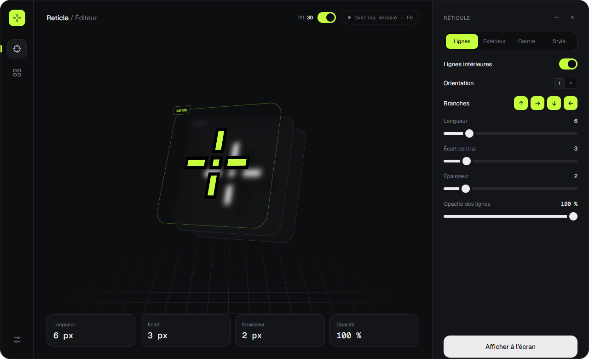
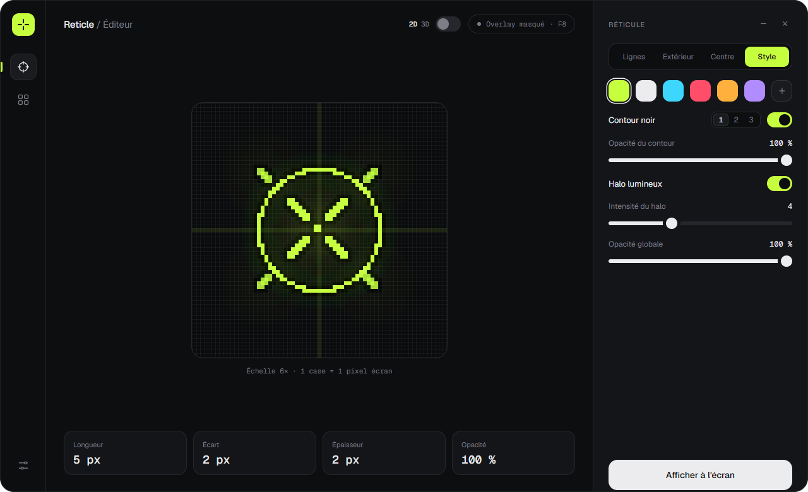
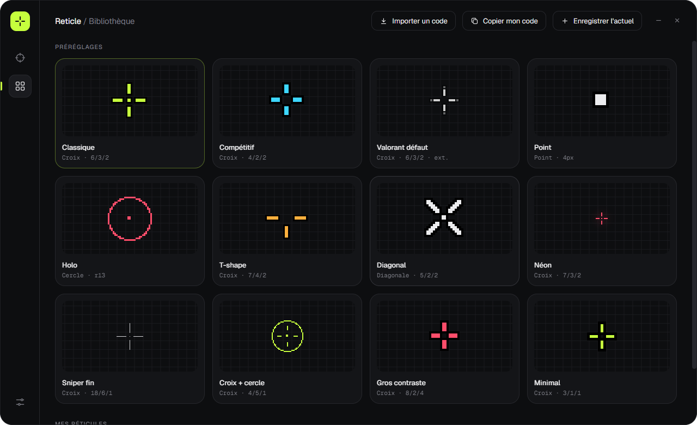

Reti cle
Un réticule net, au centre exact de ton écran,
par-dessus tous tes jeux.
L'éditeur
Chaque pixel, sous contrôle.
Une interface pensée pour régler vite et précisément, avec un aperçu qui montre exactement ce que tu verras en jeu.



Préréglages
Douze styles. Un seul clic.
Import
Ton code CS2 ou Valorant ? Colle-le.
Reticle décode les codes de partage de CS2 (anciens et nouveaux formats) et de Valorant, puis convertit les tailles pour ta résolution. Essaie ici, c'est le vrai moteur de l'appli.
- Longueur
- —
- Écart
- —
- Épaisseur
- —
- Couleur
- —
Mode d'emploi
Trois étapes. Zéro prise de tête.
Télécharge
Un seul fichier, installé en quelques secondes. Reticle se lance ensuite avec Windows, discrètement.
Règle ou importe
Ajuste chaque pixel, choisis un préréglage ou colle ton code CS2 / Valorant.
Appuie sur F8
Ton réticule apparaît au centre exact de l'écran, par-dessus n'importe quel jeu.
FAQ
Questions fréquentes.
Oui, tant que le jeu est en mode « Fenêtré sans bordure » (ou « Plein écran fenêtré »). En plein écran exclusif, Windows ne laisse aucune fenêtre s'afficher par-dessus le jeu.
Non. Reticle ne lit ni ne modifie le jeu : c'est une fenêtre transparente posée par-dessus l'écran. Vérifie quand même le règlement des compétitions auxquelles tu participes.
C'est normal pour une appli indépendante qui n'est pas encore signée. Clique sur « Informations complémentaires » puis « Exécuter quand même ». Le message n'apparaît qu'une fois.
La croix de la fenêtre la laisse tourner en arrière-plan, pour garder ton réticule. Pour l'arrêter, fais un clic droit sur l'icône près de l'horloge puis « Quitter », ou utilise « Quitter Reticle » dans les réglages.
Pas pour l'instant : Reticle est disponible pour Windows 10 et 11 (64 bits).